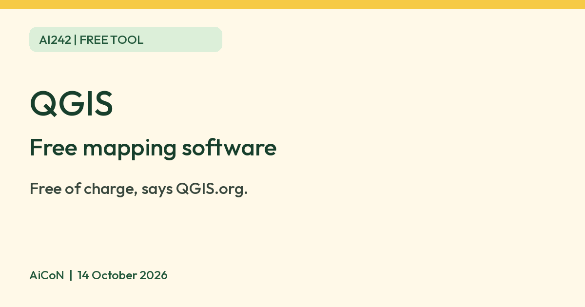

QGIS: free software for making and analysing maps
QGIS says its software is, and always will be, free of charge from QGIS.org. It makes and analyses maps on Windows, macOS and Linux.

What it is
QGIS is free map-making and map-analysis software. Its homepage describes "spatial visualization and decision-making tools for everyone" and says it can create maps, edit map layers and analyse spatial data. People use it for things like making maps from data, such as survey points or boundaries. It is not an AI tool. We included it because it is a free tool from an official source.
Is it free?
Yes. The download page says: "Our software is, and always will be, available free of charge if downloaded from QGIS.org." The homepage says QGIS is licensed under GNU GPLv2+ and is "Free and Open Source software, forever".
Which devices
- The download page says QGIS is available on Windows, macOS, Linux, Android and iOS. We did not check what the Android and iOS versions can do.
- The page shows the current version as QGIS 4.2.3, released 2026-09-25, and a long-term release, 3.44.15, "for those who value stability". It says to pick the long-term release if you are unsure.
Privacy and data
- QGIS's privacy policy says that when QGIS checks for news updates it records the date (rounded to the day), QGIS version, operating system and your country, worked out from your IP address, which it says is immediately discarded.
- It says no persistent or personally identifiable information is stored, and that you can turn off the news feed feature in QGIS.
- A separate plugin analytics dashboard records minimal data when you download a plugin.
India
- We found no India-specific statement or age limit on the pages we read.
Frequently asked questions
Is QGIS free?
Yes. Its download page says it is free of charge from QGIS.org.
Which version should I get?
The download page says the long-term release is for people who value stability, and to pick it if you are unsure.
Is it AI?
No. It is mapping software. We included it because it is a free tool from an official source.
Sources: QGIS, Download, Privacy policy, Trademark guidelines. Checked 14 October 2026. Independent guide, not affiliated. No QGIS logo is used: QGIS says it does not permit all uses of its logo.